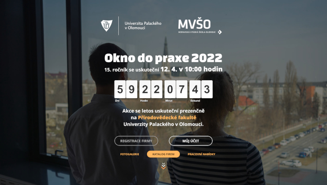
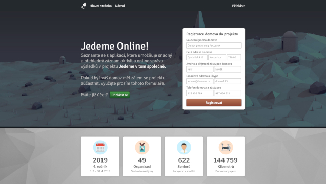

Moje návrhy

Okno do praxe
Univerzita Palackého v Olomouci
Okno do praxe je setkání zaměstnavatelů a studentů Univerzity Palackého v Olomouci.
Vytvořili jsme nový web a zahájili dlouhodobou spolupráci s kariérním centrem UP.
Podílíme se na přípravě nových ročníků akce.
www.oknodopraxe.upol.cz
Sv. Mořic Olomouc
Římskokatolická farnost svatého Mořice Olomouc
Jednalo se o redesign a přestavbu původního starého farního webu na novější technologie. Současně vznikl
i druhý web pro Svatomořické varhany. Na tom je mimo jiné
spuštěna aplikace pro adopci píšťal.
www.moric-olomouc.cz
Colidocs
Moje bakalářská práce
Colidocs je fork původního projektu Quickdocs
s novým designem, přidaným přihlašováním uživatelů přes GitHub a možností vytvářet příklady použití jednotlivých
symbolů jazyka.
colidocs.webly3d.net:5000

Jedeme Online
Projekt Jedeme v tom společně
Webová aplikace již zaniklého projektu Jedeme v tom společně. Projekt
měl za cíl aktivizovat seniory v domovech soutěživou formou společné fyzické aktivity
- jízdy na rotopedech.
jedeme.webly3d.net